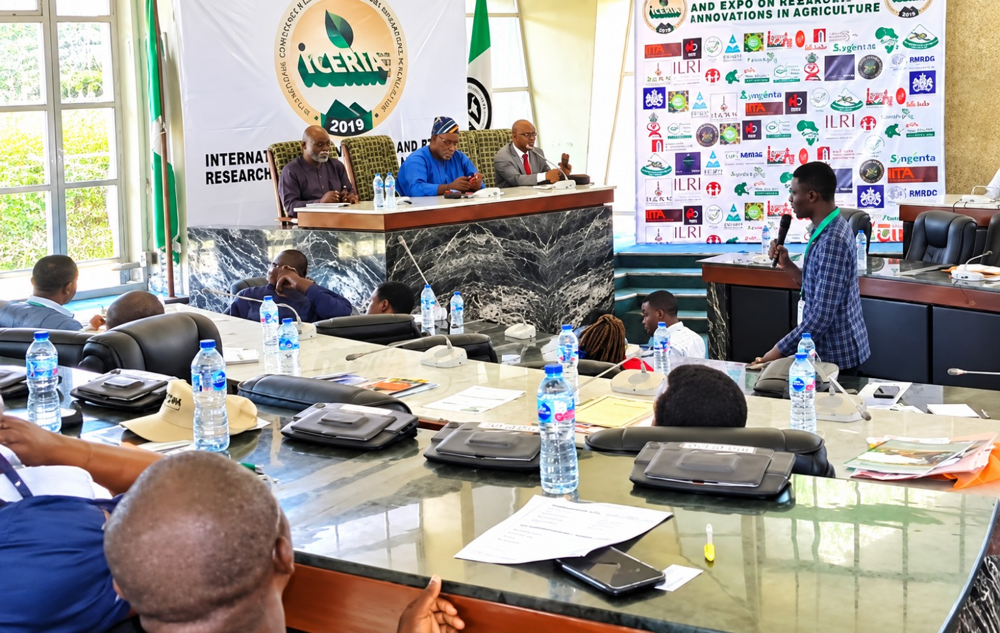
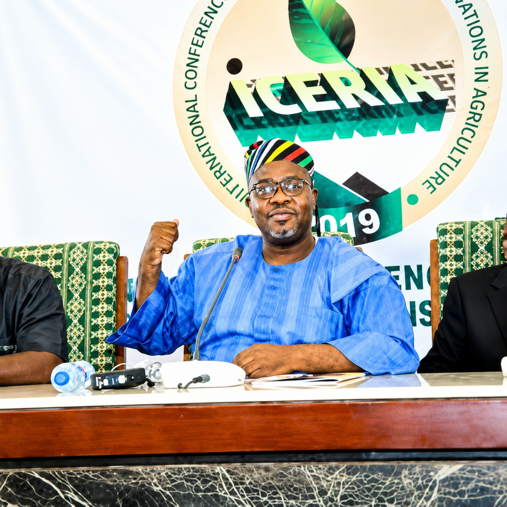
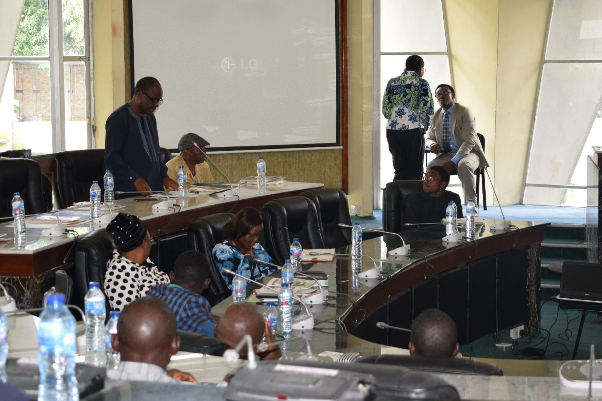
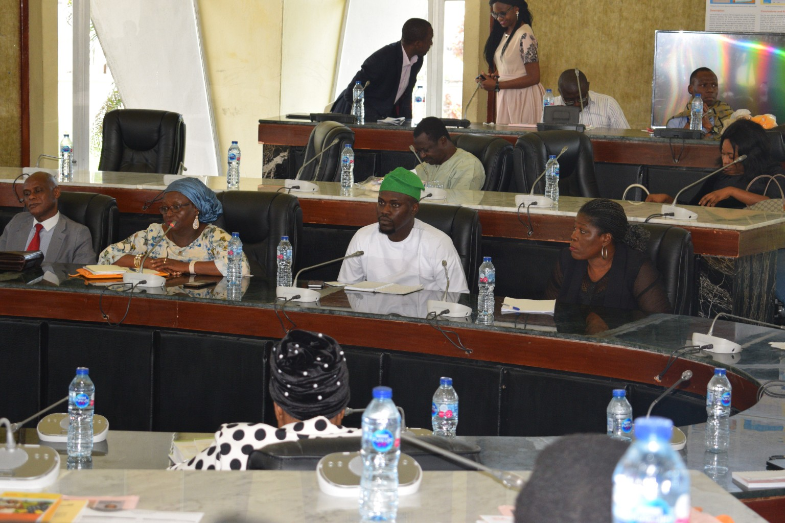
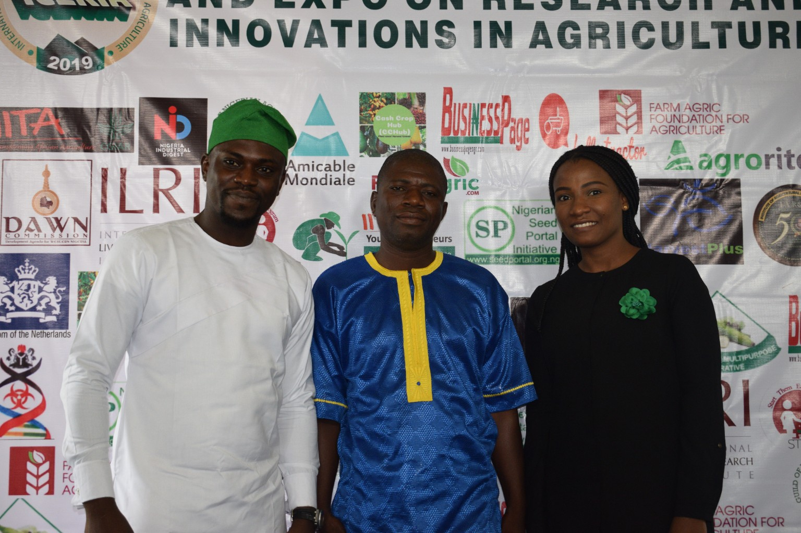
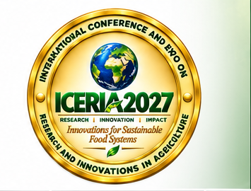

ICERIA 2019 conference session
Conference session during the inaugural edition at NIIA, Lagos.
Historical conference photography is part of the ICERIA institutional record. The gallery deliberately uses varied photographs rather than repeating one visual.
A curated visual record of ICERIA editions, research and innovation showcases, distinguished speakers, exhibition activities and the people shaping Africa's agricultural future.

Conference session during the inaugural edition at NIIA, Lagos.

Founder/Director, The Journalism Clinic; Chairman, ICERIA 2019.

Delegates and speakers during the 2019 conference.

Conference room and panel setting at NIIA.

Media engagement during the ICERIA agricultural innovation exhibition.

People and stakeholders who formed the conference community.

Participants and institutional representatives.

Research outcomes and innovation showcase.

Products and innovations on display.

Natural and agricultural product display.

The second edition's digital environment.

Bram Wits in the 2020 record.

Dr. Kenton Dashiell in the 2020 record.
The 2027 gallery will grow with the current edition. Until the event takes place, this section presents approved current-edition visual identity rather than inventing event photography.

16 March 2027 • NIIA, Victoria Island, Lagos.
Explore ICERIA 2027 →